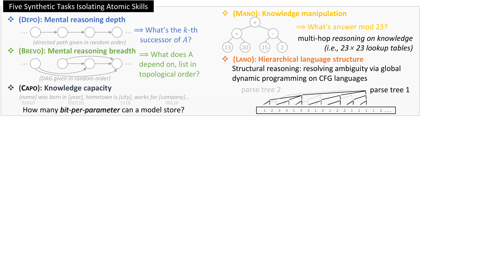

DEPO
Reasoning depth — k-hop traversal over directed permutations (K up to 16)
How deep can the model reason in one forward pass?
BREVO
Reasoning breadth — recursive DAG traversal, topological sort
How many dependencies can be tracked simultaneously?
CAPO
Knowledge capacity — bits-per-parameter storage of biographical facts
How much can the model memorize per parameter?
MANO
Knowledge manipulation — arithmetic on retrieved knowledge (mod 23)
Can the model compute over what it has memorized?
LANO
Hierarchical structure — CFG parsing via dynamic programming
Can the model learn to parse language-like structures?
Key: Each task targets a distinct dimension of intelligence. Controlled via 3 data scales × 4 model scales → “mini scaling laws.”

Five tasks decomposing intelligence into atomic, measurable capabilities